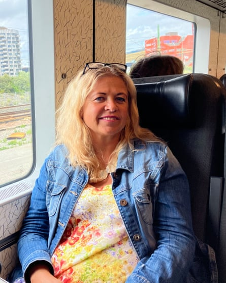
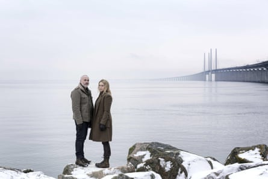
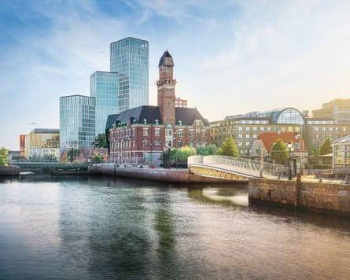
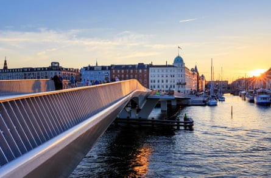
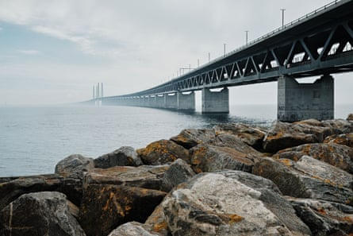

A fter 19 years of commuting to Denmark from Sweden, Helen Sjögren is so used to crossing the bridge that she identifies as Scandinavian rather than Swedish. The researcher at a Danish pharmaceutical company lives in the Swedish university town of Lund with her three children but has become accustomed to Danish working practices, and the idea of working in Sweden is now difficult to imagine.
“Because I’m Swedish, colleagues would expect me to behave like a Swede,” she said, referring to their reputation for seeking consensus. “So I would be seen as rude – too direct to fit in Sweden .”
Danes, she has found, are more forthright. “I really like the Danish mentality and way of being. It suits me much better.”
Helen Sjögren on her commute between the neighbouring countries.Photograph: Helen Sjögren
“I really like the Danish mentality and way of being. It suits me much better.” At work, she and her colleagues speak slightly adapted versions of Swedish and Danish so that everybody can understand one another. One of her few misgivings is that her taxes go to Copenhagen rather than her own municipality, where her children have gone to school and where she uses the healthcare services.
In the quarter of a century since it opened on 1 July 2000, the bridge – known as Øresundsbroen or Öresundsbron depending on whether you are on the Danish or Swedish side of the eponymous strait – has not only opened up Copenhagen’s vast job market to largely rural southern Sweden, but changed the prospects and even identities of many who use it. The 15.9km (9.9 miles) rail and road link between Copenhagen and Malmö (which includes an 8km bridge, 4km tunnel and 4km artificial island) has also transformed the world’s perception of the region.
But the trajectory of the two ends of the bridge has been a story of two halves. Copenhagen has soared to international super status, becoming a must-see tourist destination, global fashion and design leader, host to the biggest airport in the Nordics, as well as being home to the maker of Ozempic, Novo Nordisk. Thanks to the weak Swedish krona, it has become a magnet for Swedish workers, bringing in 2bn DKK (£230m) a year in tax revenues. Last year 105,000 daily journeys were made by car, train or boat over the strait, but most commuter traffic is travelling towards Denmark.
The Bridge crime drama catapulted the Øresund bridge to international fame.Photograph: Photo 12/Alamy
Malmö has not thrived to the same extent. Despite being home to the beloved fictional detective Saga Norén of the hit Scandi crime drama The Bridge – which catapulted the bridge to international fame with its unsolved murders, crashing ships and tense dark drives across Øresund – Malmö has been an observer on the sidelines of the Danish capital’s success story. This is perhaps best captured by the decision by politicians to name the area around the bridge covering southern Sweden and eastern Denmark “Greater Copenhagen”.
Of the 21,585 people who commuted regularly across the bridge to work in the final quarter of last year, 96% were people who live in Sweden, according to the Øresund Institute, an independent Swedish-Danish knowledge centre. By 2030, Greater Copenhagen, run by representatives of each of the included Swedish and Danish regions, aims to increase the total to 30,000.
“The number of commuters has begun to increase again,” said Johan Wessman, Øresund Institute’s managing director and editor-in-chief. “Partly because the labour shortage is increasing in Denmark, and partly because the Swedish krona makes it profitable to work in Denmark and live and shop in Sweden.” While it was not impossible to commute before the bridge – there were boats – it was significantly more time-consuming and difficult. In 1999, the year before the bridge opened, a total of 2,788 people commuted.
Many people in Malmö don’t use the bridge, either because they find it too expensive or because of train delays.Photograph: Diego Grandi/Alamy
As the train transported Sjögren towards Sweden and the water of the strait came into view, she said that without the bridge, life as she knew it would be impossible. “It would never have worked because it would have taken so much longer to commute that I wouldn’t have been able to hold my life together.”
Although there are border controls in place – every train stops for six to seven minutes at Hyllie station, the first stop coming into Sweden from Denmark – she said she did not think of going to Copenhagen as going to a different country. “For us who live down here, the border is not a big thing,” she said.
But Anders Linde-Laursen, a professor at Malmö University who studies identity and belonging with a focus on the Øresund region, said users of the bridge were “constantly reminded that they are crossing an international border”. This, he said, became abundantly clear when the bridge was temporarily closed in 2015 during the refugee crisis when the Swedish government said it needed “respite” from asylum seekers, leading to the introduction of travellers needing to carry ID. And in 2020, during the pandemic, when the bridge was again closed. “The border hit back at the region discourse and it was made very clear to everyone that there were Danes and Swedes, separated by the [water], and that no bridge would change that.”
At the Danish energy agency’s offices in central Copenhagen, Ture Ertmann is one of the 19,500 Danish-born people who live in Skåne, Sweden’s most southerly county. After dropping his youngest off at preschool in Malmö, he gets the train over to Denmark and arrives a work at about 8.30am – a routine he has been following for 13 years. His wife and his other two children work and go to school in Malmö and, at home, Swedish is their main language. “Everything is in Malmö,” said Ertmann, who founded the Facebook commuter group BroenLive. “It is just me that is the odd one out, that works here and has a Danish passport.”
They originally decided to move after a sudden change to immigration rules in Denmark meant his wife, who is a nurse from the Philippines, would have issues with her visa. So they got married, moved to Sweden and started a family there. She now works at Malmö hospital and has Swedish citizenship.
The taxes of people from Sweden who commute across the bridge go to Copenhagen.Photograph: Kim Petersen/Alamy
Cross-border life is not without problems. Because the two governments are not integrated when it comes to administration, paperwork can get tricky – particularly when it comes to property ownership and tax. Demand for the train is such that it is usually standing-room only at peak times, and services are often delayed.
About 9,600 Danes now own summer houses in Sweden, compared with 4,400 in 2000 , and an additional 11,330 Swedish summer houses have German owners – many of whom use the bridge to get there. Danske Torpare, a paid membership organisation that helps Danish people to navigate the administrative difficulties of buying houses in Sweden, said the price difference – it is almost half the price to buy a summerhouse in Sweden than it is in Denmark – and the opportunity to live in isolation in nature were big draws.
Sweden’s ambassador to Denmark, Hans Wallmark, said he was convinced the benefits of the bridge ran in both directions, but added: “You cannot get away from the fact that Copenhagen is a capital city, so it has that attraction.” Citing the life science cluster, known as Medicon Valley, which is mostly centred on the Danish side but is increasingly spreading to the Swedish side, he said Danish successes such as Novo Nordisk had a positive impact on Sweden, too. The establishment of the European Spallation Source (ESS) in Lund, a research facility still under construction with a datacentre in Copenhagen, was another example of a cross-bridge success story, Wallmark said.
Photograph: Peter Brinch/Øresundsbron
The next 25 years, he predicted, would bring even greater connection and focus on the region – especially after the Fehmarnbelt tunnel opened in 2029, connecting the Danish town of Rødbyhavn with Puttgarden, in Germany, under the Baltic Sea. “Then maybe we will not just be talking about Malmö, Copenhagen or Skåne, but also north Germany,” he said at his residence in Copenhagen. “Bridges, connections lead to increased integration, increased prosperity.”
But there are many in Malmö who do not use the bridge – either because it is prohibitively expensive (510DKK or £58.25 for the car toll and 160 SEK or £12.31 for a single train ticket from Malmö to Copenhagen), or because of train delays.
“It’s too expensive to go over,” said one man taking a rest from cycling on the quayside in Malmö. He recently waited five hours, on midsummer eve, to get a train across the bridge. “It doesn’t work. It’s so often [that the train gets delayed]. You can forget about commuting to Copenhagen – unless you have your own boat.”